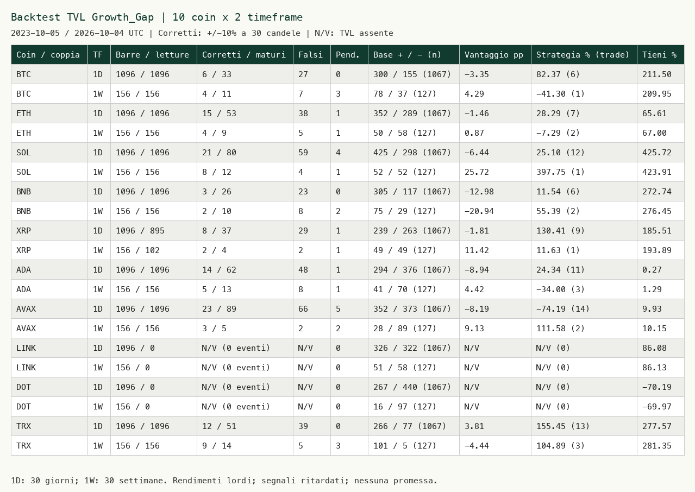

TVL Growth Gap v5
Historical research through 2026-10-04. Retrospective results, revised source data, gross returns and overlapping events; no promise of future performance.

Original report and methodology · PNG

Periodo richiesto: 2023-10-05–2026-10-04 UTC; cache prezzi giornalieri dal 2021-11-04 (700 giorni di riscaldamento). 1D: 1096 candele; 1W: settimane complete lunedì–domenica, prima apertura 2023-10-09, ultima chiusura 2026-10-04. Nessuna settimana parziale. Il TVL settimanale è quello della domenica. Nessun riempimento dei buchi; ogni finestra richiede prezzi e TVL strettamente positivi. Finestra: Growth Gap e Rotation Mirror 30 candele, Ratio Atlas 90; sul settimanale sono quindi 30/90 settimane, non giorni.
Formule e convenzione BT1 conservate: valore ritardato di una candela, attraversamento sopra +15 rialzista / sotto −15 ribassista. Ingresso all'apertura della candela successiva al dato, uscita alla chiusura della trentesima candela inclusa. Anticipo corretto = rendimento finale >=+10% per allarme rialzista o <=−10% per ribassista; non misura il primo tocco intraperiodo. Orizzonte 1D: 30 giorni; 1W: 30 settimane (210 giorni), perciò le precisioni dei due timeframe non sono direttamente comparabili. Falso allarme = ogni altro esito maturo. Gli ultimi 29 periodi senza esito completo sono contati come pendenti.
Base: aperture con 30 candele complete, frequenze +10% e −10%. Base direzionale attesa = (allarmi positivi × frequenza base rialzista + negativi × frequenza ribassista) / allarmi maturi; vantaggio in punti percentuali rispetto a questa base. Strategia: solo allarmi positivi, 30 candele in posizione, poi liquidità; nessuno short, posizioni sovrapposte ignorate, pendenti esclusi. Tieni sempre: prima apertura disponibile del timeframe / ultima chiusura. Rendimenti lordi senza costi, slippage, interessi o tasse; esposizioni diverse.
Prezzi spot Binance USDT, TVL chain DeFiLlama USD (USDT non identico a USD). Mappa BTC=Bitcoin, ETH=Ethereum, SOL=Solana, BNB=BSC, XRP=XRPL, ADA=Cardano, AVAX=Avalanche, TRX=Tron. LINK non è il gas token di una chain TVL diretta; DOT non ha una chain diretta nel catalogo usato. Entrambi hanno prezzi/hold, ma nessun backtest TVL valido; N/V non significa zero successo. Non usiamo TVL Ethereum per LINK né parachain arbitrarie per DOT. Rotation: BTC/ETH, ETH/SOL e tutte le altre coin/ETH, estensione dichiarata senza ottimizzazione; esito sul prezzo assoluto della prima coin.
TVL attualmente ricostruito, revisioni e timestamp originali di pubblicazione non disponibili: prova retrospettiva, non validazione in tempo reale. Allarmi sovrapposti non indipendenti, nessuna significatività statistica, nessuna ottimizzazione o promessa. Ranking descrittivo per timeframe; almeno 20 eventi maturi per selezionare una coin, per evitare vincitori su uno o due allarmi.
| Coin / coppia | TF | Barre / letture | Corretti / maturi | Falsi | Pend. | Base + / - (n) | Vantaggio pp | Strategia % (trade) | Tieni % |
|---|---|---|---|---|---|---|---|---|---|
| BTC | 1D | 1096 / 1096 | 6 / 33 | 27 | 0 | 300 / 155 (1067) | -3.35 | 82.37 (6) | 211.50 |
| BTC | 1W | 156 / 156 | 4 / 11 | 7 | 3 | 78 / 37 (127) | 4.29 | -41.30 (1) | 209.95 |
| ETH | 1D | 1096 / 1096 | 15 / 53 | 38 | 1 | 352 / 289 (1067) | -1.46 | 28.29 (7) | 65.61 |
| ETH | 1W | 156 / 156 | 4 / 9 | 5 | 1 | 50 / 58 (127) | 0.87 | -7.29 (2) | 67.00 |
| SOL | 1D | 1096 / 1096 | 21 / 80 | 59 | 4 | 425 / 298 (1067) | -6.44 | 25.10 (12) | 425.72 |
| SOL | 1W | 156 / 156 | 8 / 12 | 4 | 1 | 52 / 52 (127) | 25.72 | 397.75 (1) | 423.91 |
| BNB | 1D | 1096 / 1096 | 3 / 26 | 23 | 0 | 305 / 117 (1067) | -12.98 | 11.54 (6) | 272.74 |
| BNB | 1W | 156 / 156 | 2 / 10 | 8 | 2 | 75 / 29 (127) | -20.94 | 55.39 (2) | 276.45 |
| XRP | 1D | 1096 / 895 | 8 / 37 | 29 | 1 | 239 / 263 (1067) | -1.81 | 130.41 (9) | 185.51 |
| XRP | 1W | 156 / 102 | 2 / 4 | 2 | 1 | 49 / 49 (127) | 11.42 | 11.63 (1) | 193.89 |
| ADA | 1D | 1096 / 1096 | 14 / 62 | 48 | 1 | 294 / 376 (1067) | -8.94 | 24.34 (11) | 0.27 |
| ADA | 1W | 156 / 156 | 5 / 13 | 8 | 1 | 41 / 70 (127) | 4.42 | -34.00 (3) | 1.29 |
| AVAX | 1D | 1096 / 1096 | 23 / 89 | 66 | 5 | 352 / 373 (1067) | -8.19 | -74.19 (14) | 9.93 |
| AVAX | 1W | 156 / 156 | 3 / 5 | 2 | 2 | 28 / 89 (127) | 9.13 | 111.58 (2) | 10.15 |
| LINK | 1D | 1096 / 0 | N/V (0 eventi) | N/V | 0 | 326 / 322 (1067) | N/V | N/V (0) | 86.08 |
| LINK | 1W | 156 / 0 | N/V (0 eventi) | N/V | 0 | 51 / 58 (127) | N/V | N/V (0) | 86.13 |
| DOT | 1D | 1096 / 0 | N/V (0 eventi) | N/V | 0 | 267 / 440 (1067) | N/V | N/V (0) | -70.19 |
| DOT | 1W | 156 / 0 | N/V (0 eventi) | N/V | 0 | 16 / 97 (127) | N/V | N/V (0) | -69.97 |
| TRX | 1D | 1096 / 1096 | 12 / 51 | 39 | 0 | 266 / 77 (1067) | 3.81 | 155.45 (13) | 277.57 |
| TRX | 1W | 156 / 156 | 9 / 14 | 5 | 3 | 101 / 5 (127) | -4.44 | 104.89 (3) | 281.35 |
N/V nelle colonne allarmi/strategia: nessuna lettura TVL valida. N/V nel vantaggio: nessun evento maturo. Zero strategia con letture valide e zero trade indica liquidità. Rendimenti hold calcolati solo dai prezzi.
Cache e 60 serie CSV: `/Users/ben/MOTORE CRYPTO/dati/backtest_bt2/`. Eventi: `BT2_EVENTI.json`; risultati e hash: `PROVA_BT2.json`; controlli: `VERIFICA_BT2.json`.
Fonti pubbliche: https://api.binance.com/api/v3/klines ; https://api.llama.fi/v2/chains ; https://api.llama.fi/v2/historicalChainTvl/{chain}.